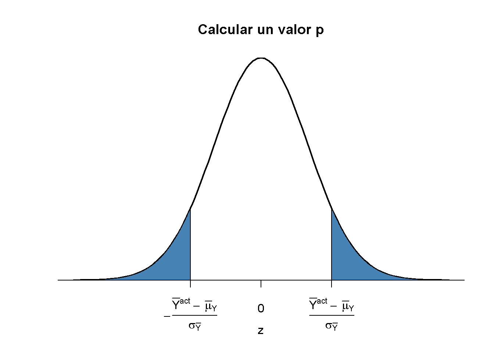
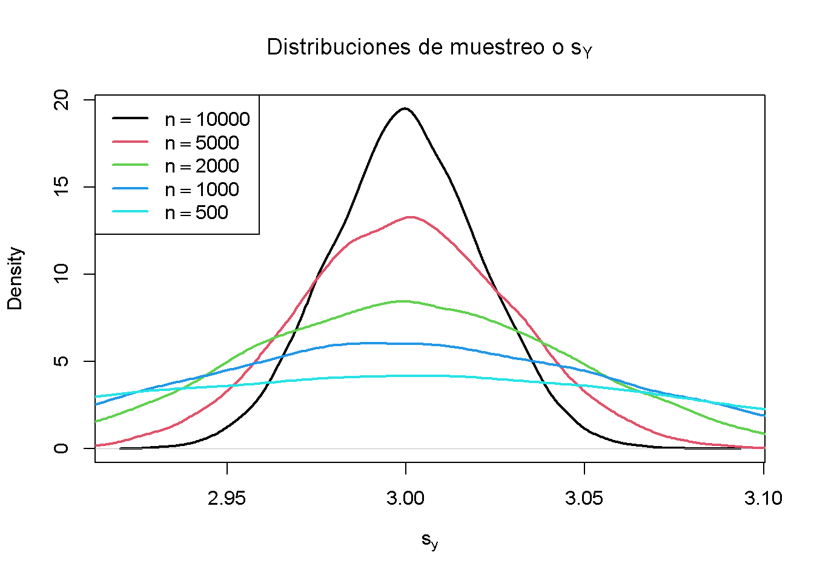
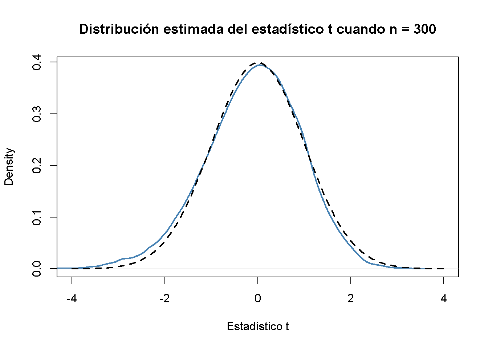
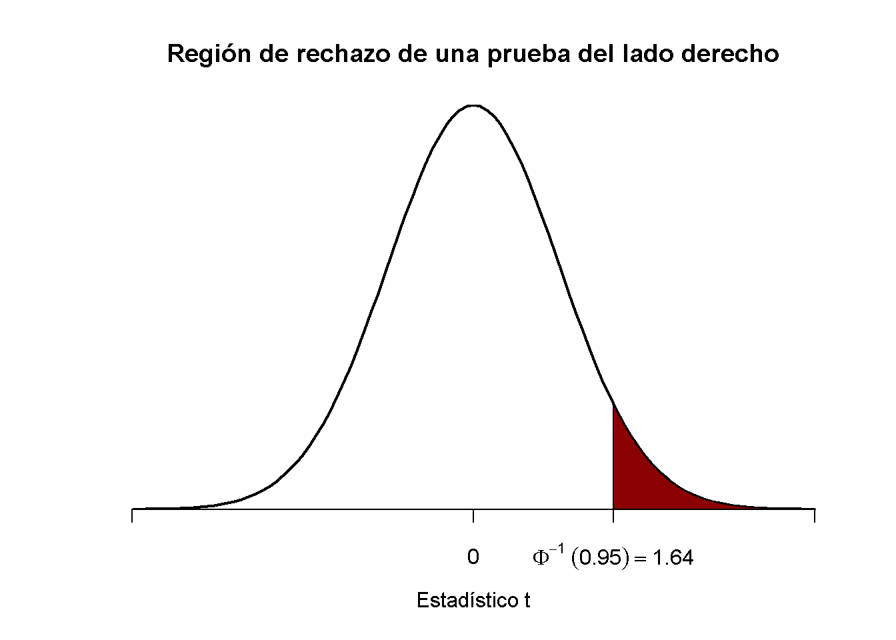
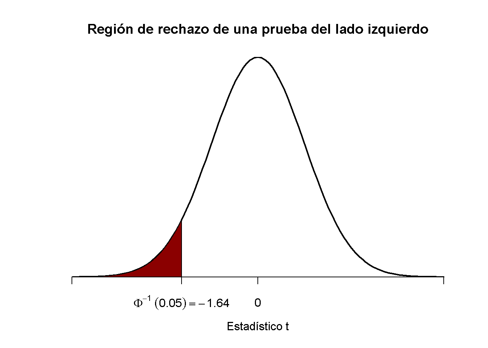

4.3 Pruebas de hipótesis relativas a la media de la población
En esta sección, se revisan brevemente los conceptos de la prueba de hipótesis y se discute cómo realizar pruebas de hipótesis en R. El objetivo en hacer inferencias sobre una media poblacional desconocida.
Acerca de las hipótesis y las pruebas de hipótesis
En una prueba de significancia se quiere aprovechar la información contenida en una muestra como evidencia a favor o en contra de una hipótesis. Esencialmente, las hipótesis son preguntas simples que pueden responderse con un “sí” o un “no.” En una prueba de hipótesis, normalmente se trata con dos hipótesis diferentes:
La hipótesis nula, denotada \(H_0\), es la hipótesis que se está interesado en probar.
Debe haber una hipótesis alternativa, denotada \(H_1\), la hipótesis que se cree que se cumple si se rechaza la hipótesis nula.
La hipótesis nula de que la media poblacional de \(Y\) es igual al valor \(\mu_{Y,0}\) se escribe como
\[ H_0: E(Y) = \mu_{Y,0}. \]
A menudo, la hipótesis alternativa elegida es la más general,
\[ H_1: E(Y) \neq \mu_{Y,0}, \]
lo que implica que \(E(Y)\) puede ser cualquier cosa menos el valor de la hipótesis nula. Esto se llama una alternativa de dos caras.
En aras de la brevedad, solo se consideran alternativas de dos caras en las secciones siguientes de este apartado.
El valor p (p-Value)
Suponga que la hipótesis nula es verdadera. El valor \(p\) es la probabilidad de extraer datos y observar un estadístico de prueba correspondiente que sea al menos tan adverso a lo que se establece bajo la hipótesis nula, como el estadístico de prueba realmente calculado usando los datos de la muestra.
En el contexto de la media poblacional y la media muestral, esta definición puede expresarse matemáticamente de la siguiente manera:
\[\begin{equation} p \text{-value} = P_{H_0}\left[ \lvert \overline{Y} - \mu_{Y,0} \rvert > \lvert \overline{Y}^{act} - \mu_{Y,0} \rvert \right] \tag{4.2} \end{equation}\]
En (4.2), \(\overline{Y}^{act}\) es la media muestral de los datos disponibles (un valor). Para calcular el valor \(p\) como en (4.2), se requiere el conocimiento sobre la distribución muestral de \(\overline{Y}\) (una variable aleatoria) cuando la hipótesis nula es verdadera (la distribución nula). Sin embargo, en la mayoría de los casos se desconoce la distribución muestral y, por tanto, la distribución nula de \(\overline{Y}\). Afortunadamente, el TLC (ver Concepto clave 2.7) permite la aproximación de muestra grande
\[ \overline{Y} \approx \mathcal{N}(\mu_{Y,0}, \, \sigma^2_{\overline{Y}}) \ \ , \ \ \sigma^2_{\overline{Y}} = \frac{\sigma_Y^2}{n}, \]
asumiendo que la hipótesis nula \(H_0: E(Y) = \mu_{Y, 0}\) es cierta. Con algo de álgebra se sigue para una \(n\) grande que
\[ \frac{\overline{Y} - \mu_{Y,0}}{\sigma_Y/\sqrt{n}} \sim \mathcal{N}(0,1). \]
Entonces, en muestras grandes, el valor \(p\) se puede calcular sin conocimiento de la distribución muestral exacta de \(\overline{Y}\) usando la aproximación normal anterior.
Cálculo del valor p cuando se conoce la desviación estándar
Por ahora, se supone que se conoce \(\sigma_{\overline{Y}}\). Entonces, se puede reescribir (4.2) como:
\[\begin{align} p \text{-value} =& \, P_{H_0}\left[ \left\lvert \frac{\overline{Y} - \mu_{Y,0}}{\sigma_{\overline{Y}}} \right\rvert > \left\lvert \frac{\overline{Y}^{act} - \mu_{Y,0}}{\sigma_{\overline{Y}}} \right\rvert \right] \\ =& \, 2 \cdot \Phi \left[ - \left\lvert \frac{\overline{Y}^{act} - \mu_{Y,0}}{\sigma_{\overline{Y}}} \right\rvert\right]. \tag{4.3} \end{align}\]
El valor \(p\) es el área en las colas de la distribución \(\mathcal{N}(0,1)\) que se encuentra más allá de
\[\begin{equation} \pm \left\lvert \frac{\overline{Y}^{act} - \mu_{Y,0}}{\sigma_{\overline{Y}}} \right\rvert \tag{4.4} \end{equation}\]
Ahora usando R para visualizar lo que se indica en (4.3) y (4.4). El siguiente fragmento de código replica la Figura 3.1.
# graficar la densidad normal estándar en el intervalo [-4,4]
curve(dnorm(x),
xlim = c(-4, 4),
main = "Calcular un valor p",
yaxs = "i",
xlab = "z",
ylab = "",
lwd = 2,
axes = "F")
# agregar eje x
axis(1,
at = c(-1.5, 0, 1.5),
padj = 0.75,
labels = c(expression(-frac(bar(Y)^"act"~-~bar(mu)[Y,0], sigma[bar(Y)])),
0,
expression(frac(bar(Y)^"act"~-~bar(mu)[Y,0], sigma[bar(Y)]))))
# sombrear la región del valor p/2 en la cola izquierda
polygon(x = c(-6, seq(-6, -1.5, 0.01), -1.5),
y = c(0, dnorm(seq(-6, -1.5, 0.01)),0),
col = "steelblue")
# sombrear la región del valor p/2 en la cola derecha
polygon(x = c(1.5, seq(1.5, 6, 0.01), 6),
y = c(0, dnorm(seq(1.5, 6, 0.01)), 0),
col = "steelblue")
Varianza de muestra, desviación estándar de muestra y error estándar
Si se desconoce \(\sigma^2_Y\), debe estimarse. Esto se puede hacer usando la varianza de la muestra:
\[\begin{equation} s_Y^2 = \frac{1}{n-1} \sum_{i=1}^n (Y_i - \overline{Y})^2. \end{equation}\]
Además
\[\begin{equation} s_Y = \sqrt{\frac{1}{n-1} \sum_{i=1}^n (Y_i - \overline{Y})^2} \end{equation}\]
es un estimador adecuado para la desviación estándar de \(Y\). En R, \(s_Y\) se implementa en la función sd(), ver ?Sd.
Usando R se puede ilustrar que \(s_Y\) es un estimador consistente para \(\sigma_Y\), es decir
\[ s_Y \overset{p}{\longrightarrow} \sigma_Y. \]
La idea aquí es generar una gran cantidad de muestras \(Y_1,\dots,Y_n\) donde, \(Y\sim \mathcal{N}(10, 9)\) digamos, estimar \(\sigma_Y\) usando \(s_Y\) e investigar cómo la distribución de \(s_Y\) cambia a medida que \(n\) aumenta.
# vector de tamaños de muestra
n <- c(10000, 5000, 2000, 1000, 500)
# observaciones de muestra, estimando usando 'sd()' y graficar las distribuciones estimadas
sq_y <- replicate(n = 10000, expr = sd(rnorm(n[1], 10, 3)))
plot(density(sq_y),
main = expression("Distribuciones de muestreo o" ~ s[Y]),
xlab = expression(s[y]),
lwd = 2)
for (i in 2:length(n)) {
sq_y <- replicate(n = 10000, expr = sd(rnorm(n[i], 10, 3)))
lines(density(sq_y),
col = i,
lwd = 2)
}
# agrega una leyenda
legend("topleft",
legend = c(expression(n == 10000),
expression(n == 5000),
expression(n == 2000),
expression(n == 1000),
expression(n == 500)),
col = 1:5,
lwd = 2)
El gráfico muestra que la distribución de \(s_Y\) se ajusta alrededor del valor real \(\sigma_Y = 3\) a medida que aumenta \(n\).
La función que estima la desviación estándar de un estimador se llama error estándar del estimador. El concepto clave 3.4 resume la terminología en el contexto de la media muestral.
Concepto clave 3.4
El error estándar de \(\overline{Y}\)
Tomar una muestra i.i.d. \(Y_1, \dots, Y_n\). La media de \(Y\) se estima consistentemente mediante \(\overline{Y}\), la media muestral de $ Y_i $. Dado que \(\overline{Y}\) es una variable aleatoria, tiene una distribución de muestreo con varianza \(\frac{\sigma_Y^2}{n}\).
El error estándar de \(\overline{Y}\), denotado \(SE(\overline{Y})\) es un estimador de la desviación estándar de \(\overline{Y}\):
\[ SE(\overline{Y}) = \hat\sigma_{\overline{Y}} = \frac{s_Y}{\sqrt{n}} \]
El signo de intercalación (^) sobre \(\sigma\) indica que \(\hat\sigma_{\overline{Y}}\) es un estimador de \(\sigma_{\overline{Y}}\).
Como ejemplo para respaldar el Concepto clave 3.4, considere una muestra de \(n = 100\) i.i.d. observaciones de la variable distribuida de Bernoulli \(Y\) con probabilidad de éxito \(p=0.1\). Entonces \(E(Y)=p=0.1\) y \(\text{Var}(Y)=p(1-p)\). \(E(Y)\) se puede estimar mediante \(\overline{Y}\), que luego tiene una variación
\[ \sigma^2_{\overline{Y}} = p(1-p)/n = 0.0009 \]
y desviación estándar
\[ \sigma_{\overline{Y}} = \sqrt{p(1-p)/n} = 0.03. \]
En este caso, el error estándar de \(\overline{Y}\) puede estimarse mediante
\[ SE(\overline{Y}) = \sqrt{\overline{Y}(1-\overline{Y})/n}. \]
Se comprueba si \(\overline{Y}\) y \(SE(\overline{Y})\) estiman los valores verdaderos respectivos, en promedio.
# extraiga 10000 muestras de tamaño 100 y estime la media de Y y
# estimar el error estándar de la media muestral
mean_estimates <- numeric(10000)
se_estimates <- numeric(10000)
for (i in 1:10000) {
s <- sample(0:1,
size = 100,
prob = c(0.9, 0.1),
replace = T)
mean_estimates[i] <- mean(s)
se_estimates[i] <- sqrt(mean(s) * (1 - mean(s)) / 100)
}
mean(mean_estimates)
#> [1] 0.10047
mean(se_estimates)
#> [1] 0.02961587Ambos estimadores parecen no tener sesgos para los parámetros verdaderos. De hecho, esto es cierto para la media de la muestra, pero no para \(SE(\overline{Y})\). Sin embargo, ambos estimadores son consistentes para los parámetros verdaderos.
Cálculo del valor p cuando la desviación estándar es desconocida
Cuando se desconoce \(\sigma_Y\), el valor de \(p\) para una prueba de hipótesis sobre \(\mu_Y\) usando \(\overline{Y}\) se puede calcular reemplazando \(\sigma_{\overline{Y}}\) en (4.3) por el error estándar \(SE(\overline{Y}) = \hat\sigma_{\overline{Y}}\). Luego,
\[ p\text{-value} = 2\cdot\Phi\left(-\left\lvert \frac{\overline{Y}^{act}-\mu_{Y,0}}{SE(\overline{Y})} \right\rvert \right). \]
Esto se hace fácilmente en R:
# muestra y estimación, calcula el error estándar
samplemean_act <- mean(
sample(0:1,
prob = c(0.9, 0.1),
replace = T,
size = 100))
SE_samplemean <- sqrt(samplemean_act * (1 - samplemean_act) / 100)
# hipótesis nula
mean_h0 <- 0.1
# calcular el valor p
pvalue <- 2 * pnorm(- abs(samplemean_act - mean_h0) / SE_samplemean)
pvalue
#> [1] 0.7492705Más adelante en el curso, se encontrarán enfoques más convenientes para obtener estadísticos \(t\) y valores \(p\) usando R.
La estadística t
En la prueba de hipótesis, el promedio de la muestra estandarizada
\[\begin{equation} t = \frac{\overline{Y} - \mu_{Y,0}}{SE(\overline{Y})} \tag{4.5} \end{equation}\]
se llama un estadístico \(t\). Dicho estadístico de \(t\) juega un papel importante en la prueba de hipótesis sobre \(\mu_Y\). Es un ejemplo destacado de estadística de prueba.
Implícitamente, ya se ha calculado un estadístico \(t\) para \(\overline{Y}\) en el fragmento de código anterior.
# calcular un estadístico t para la media de la muestra
tstatistic <- (samplemean_act - mean_h0) / SE_samplemean
tstatistic
#> [1] 0.3196014Usando R se puede ilustrar que si \(\mu_{Y,0}\) es igual al valor verdadero, es decir, si la hipótesis nula es verdadera, (4.5) es aproximadamente \(\mathcal{N}(0,1)\) distribuido cuando \(n\) es grande.
# preparar un vector vacío para estadísticas t
tstatistics <- numeric(10000)
# establecer tamaño de muestra
n <- 300
# simular 10000 estadísticos t
for (i in 1:10000) {
s <- sample(0:1,
size = n,
prob = c(0.9, 0.1),
replace = T)
tstatistics[i] <- (mean(s)-0.1)/sqrt(var(s)/n)
}En la simulación anterior, se estimó la varianza de \(Y_i\) usando var(s). Esto es más general que mean(s)*(1-mean(s)), ya que esta última requiere que los datos estén distribuidos por Bernoulli y que se sepa esto.
# graficar densidad y comparar con la densidad N(0,1)
plot(density(tstatistics),
xlab = "Estadístico t",
main = "Distribución estimada del estadístico t cuando n = 300",
lwd = 2,
xlim = c(-4, 4),
col = "steelblue")
# N(0,1) densidad (discontinua)
curve(dnorm(x),
add = T,
lty = 2,
lwd = 2)
A juzgar por el gráfico, la aproximación normal funciona razonablemente bien para el tamaño de muestra elegido. Esta aproximación normal ya se ha utilizado en la definición del valor \(p\), ver (4.5).
Prueba de hipótesis con un nivel de significancia preespecificado
Concepto clave 3.5
La terminología de la prueba de hipótesis
En la prueba de hipótesis, son posibles dos tipos de errores:
La hipótesis nula es rechazada aunque es cierta (error de tipo I)
La hipótesis nula no se rechaza aunque es falsa (error de tipo II)
El nivel de significancia de la prueba es la probabilidad de cometer un error de tipo I, que se está dispuesto a aceptar de antemano. Por ejemplo, usando un nivel de significancia preespecificado de \(0.05\), se rechaza la hipótesis nula si y solo si el valor \(p\) es menor que \(0.05\). El nivel de significancia se elige antes de realizar la prueba.
Un procedimiento equivalente es rechazar la hipótesis nula si el estadístico de prueba observado es, en términos de valor absoluto, mayor que el valor crítico del estadístico de prueba. El valor crítico está determinado por el nivel de significancia elegido y define dos conjuntos de valores separados que se denominan región de aceptación y región de rechazo. La región de aceptación contiene todos los valores de la estadística de prueba para los que la prueba no rechaza, mientras que la región de rechazo contiene todos los valores para los que la prueba sí rechaza.
El valor \(p\) es la probabilidad de que, en un muestreo repetido bajo las mismas condiciones, se observe un estadístico de prueba que proporcione tanta evidencia contra la hipótesis nula como el estadístico de prueba realmente observado.
La probabilidad real de que la prueba rechace la verdadera hipótesis nula se denomina tamaño de la prueba. En un entorno ideal, el tamaño es igual al nivel de significancia.
La probabilidad de que la prueba rechace correctamente una hipótesis nula falsa se llama potencia.
Reconsidere el valor p calculado más arriba:
# comprobar si el valor p < 0.05
pvalue < 0.05
#> [1] FALSELa condición no se cumple por lo que no se rechaza correctamente la hipótesis nula.
Cuando se trabaja con un estadístico \(t\) en su lugar, es equivalente a aplicar la siguiente regla:
\[ \text{Rechazar } H_0 \text{ si } \lvert t^{act} \rvert > 1.96 \]
Se rechaza la hipótesis nula al nivel de significancia de \(5\%\) si la estadística de \(t\) calculada se encuentra más allá del valor crítico de 1.96 en términos de valor absoluto. \(1.96\) es el cuantil \(0.975\) de la distribución normal estándar.
# comprobar el valor crítico
qnorm(p = 0.975)
#> [1] 1.959964
# compruebar si la hipótesis nula se rechaza utilizando el estadístico t calculado más arriba
abs(tstatistic) > 1.96
#> [1] FALSEAl igual que con el valor \(p\), no se puede rechazar la hipótesis nula utilizando el estadístico \(t\) correspondiente. El Concepto clave 3.6 resume el procedimiento de realizar una prueba de hipótesis bilateral sobre la media poblacional \(E(Y)\).
Concepto clave 3.6
Prueba de la hipótesis \(E(Y) = \mu_{Y,0}\) contra la alternativa \(E(Y) \neq \mu_{Y,0}\)
Estimar \(\mu_{Y}\) usando \(\overline{Y}\) y calculando el \(SE(\overline{Y})\), error estándar de \(\overline{Y}\).
Calcular el estadístico \(t\).
Calcular el valor \(p\) y rechazar la hipótesis nula en el nivel de significancia \(5\%\) si el valor \(p\) es menor que \(0.05\) o, de manera equivalente, si
\[ \left\lvert t^{act} \right\rvert > 1.96. \]
Alternativas unilaterales
A veces interesa probar si la media es mayor o menor que algún valor hipotético bajo el nulo. Para ceñirse al curso, se toma la presunta brecha salarial entre los trabajadores con buena educación y los menos educados. Dado que se anticipó que existe tal diferencial, una alternativa relevante (a la hipótesis nula de que no existe un diferencial salarial) es que los individuos bien educados ganan más; es decir, que el salario promedio por hora para este grupo, \(\mu_Y\) es mayor que \(\mu_{Y, 0}\), el salario promedio de los trabajadores con menos educación que se asume que se conoce aquí por simplicidad (la sección 4.5 analiza cómo probar la equivalencia de medias poblacionales desconocidas).
Este es un ejemplo de una prueba del lado derecho y el par de hipótesis se elige para ser
\[ H_0: \mu_Y = \mu_{Y,0} \ \ \text{vs} \ \ H_1: \mu_Y > \mu_{Y,0}. \]
Se rechaza la hipótesis nula si el estadístico de prueba calculado es mayor que el valor crítico \(1.64\), el equivalente de \(0.95\) de la distribución \(\mathcal{N}(0,1)\). Esto asegura que \(1-0.95=5\%\) masa de probabilidad permanece en el área a la derecha del valor crítico. Como antes, se puede visualizar esto en R usando la función polygon().
# graficar la densidad normal estándar en el dominio [-4,4]
curve(dnorm(x),
xlim = c(-4, 4),
main = "Región de rechazo de una prueba del lado derecho",
yaxs = "i",
xlab = "Estadístico t",
ylab = "",
lwd = 2,
axes = "F")
# Agregar el eje x
axis(1,
at = c(-4, 0, 1.64, 4),
padj = 0.5,
labels = c("", 0, expression(Phi^-1~(.95)==1.64), ""))
# Sombrear la región de rechazo en la cola izquierda
polygon(x = c(1.64, seq(1.64, 4, 0.01), 4),
y = c(0, dnorm(seq(1.64, 4, 0.01)), 0),
col = "darkred")
De manera análoga, para la prueba del lado izquierdo se tiene
\[ H_0: \ mu_Y = \ mu_ {Y, 0} \ \ \ text {vs.} \ \ H_1: \ mu_Y <\ mu_ {Y, 0}. \]
El nulo se rechaza si el estadístico de prueba observado no alcanza el valor crítico que, para una prueba en el nivel de significancia de \(0.05\), está dado por \(-1.64\), el equivalente de \(0.05\) -cuantil de la distribución \(\mathcal{N}(0,1)\). \(5\%\) masa de probabilidad se encuentra a la izquierda del valor crítico.
Es sencillo adaptar el fragmento de código anterior al caso de una prueba del lado izquierdo. Solo se tiene que ajustar el sombreado de color y las marcas de graduación.
# graficar la densidad normal estándar en el dominio [-4,4]
curve(dnorm(x),
xlim = c(-4, 4),
main = "Región de rechazo de una prueba del lado izquierdo",
yaxs = "i",
xlab = "Estadístico t",
ylab = "",
lwd = 2,
axes = "F")
# Agregar eje x
axis(1,
at = c(-4, 0, -1.64, 4),
padj = 0.5,
labels = c("", 0, expression(Phi^-1~(.05)==-1.64), ""))
# Región de rechazo de sombra en la cola derecha
polygon(x = c(-4, seq(-4, -1.64, 0.01), -1.64),
y = c(0, dnorm(seq(-4, -1.64, 0.01)), 0),
col = "darkred")